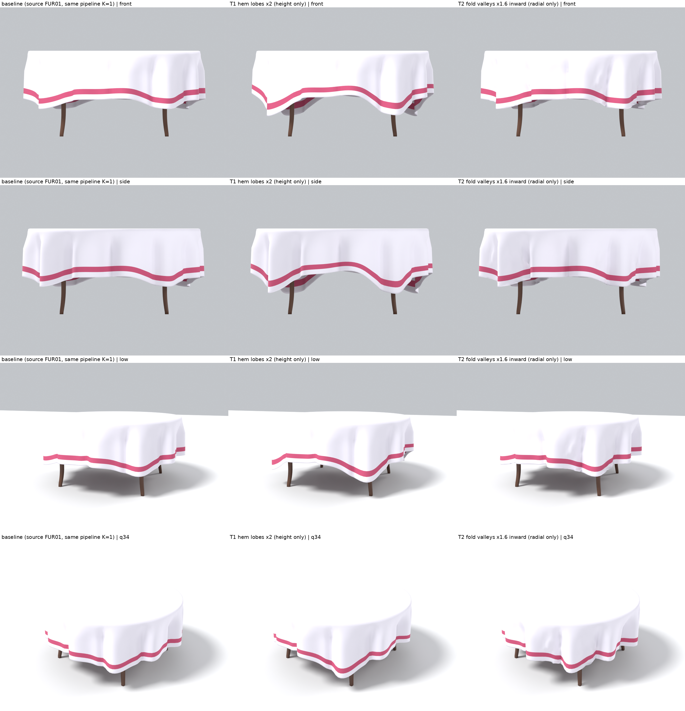
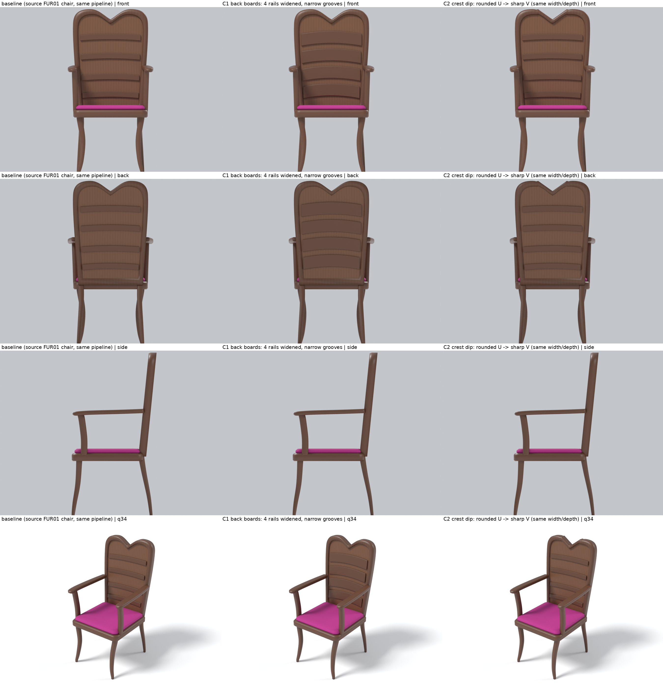
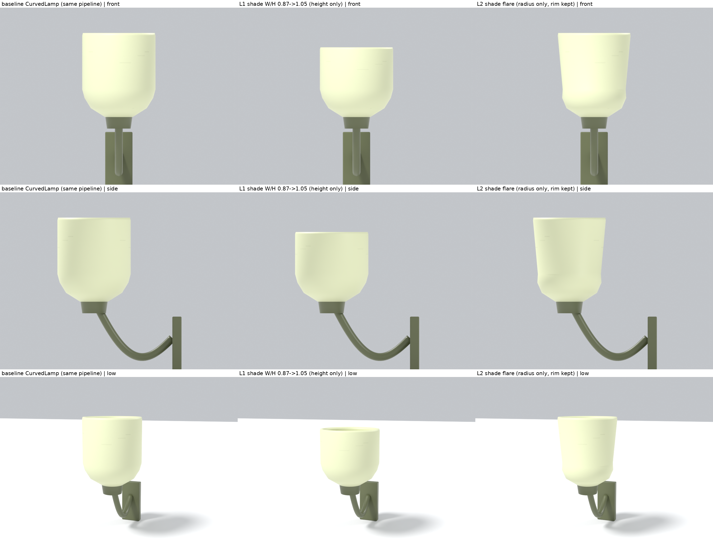
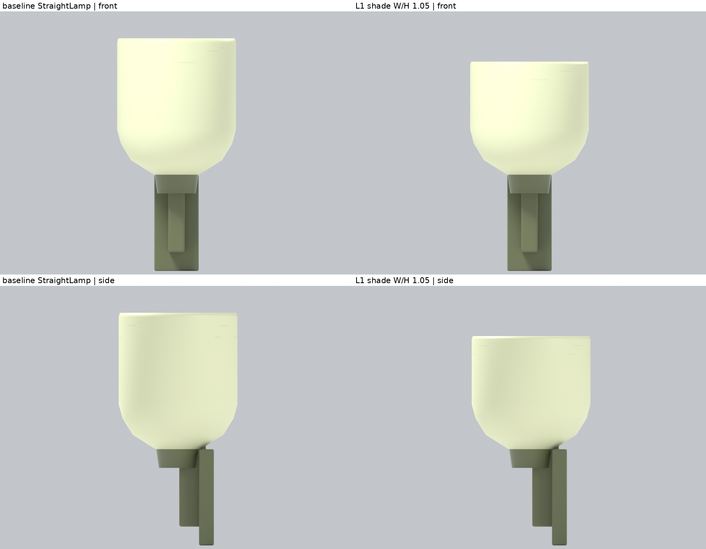
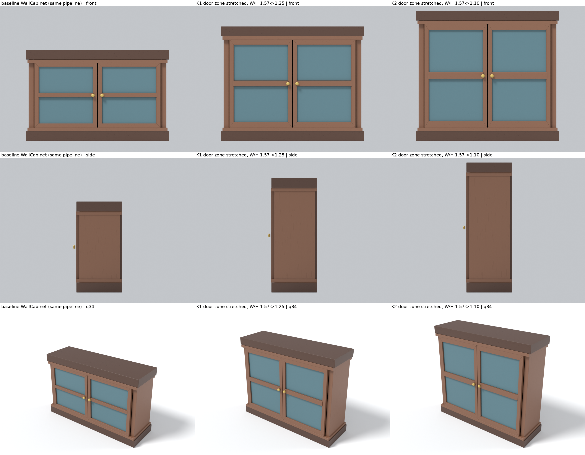
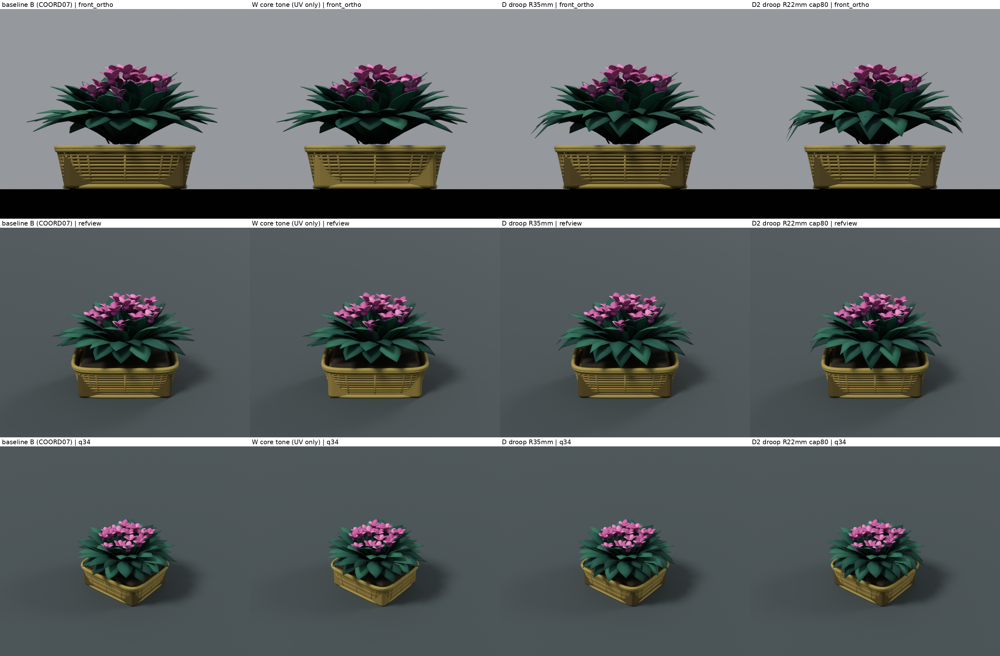
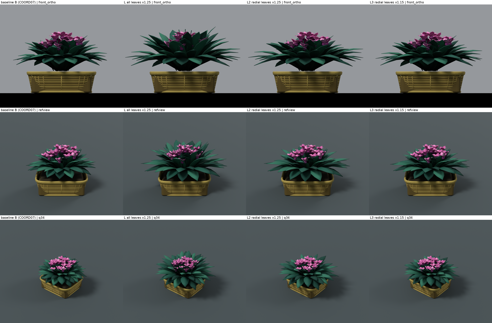
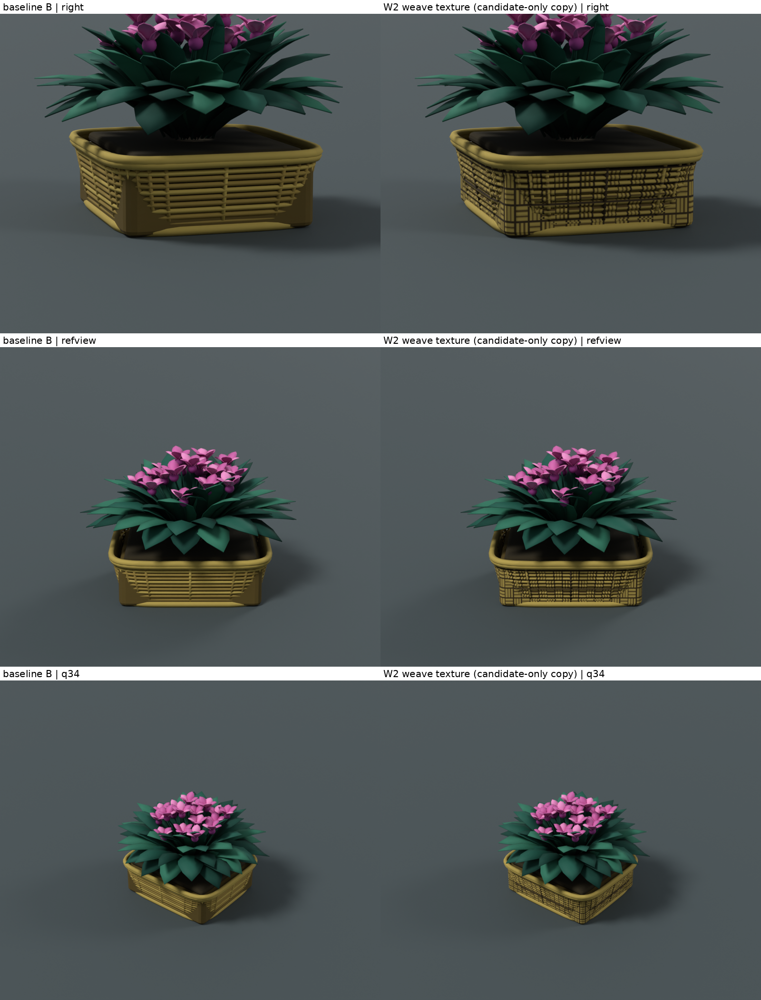
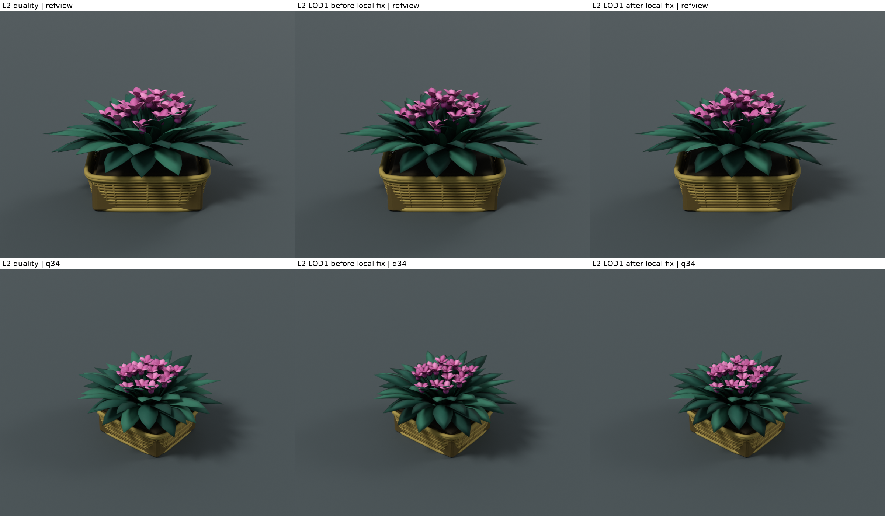
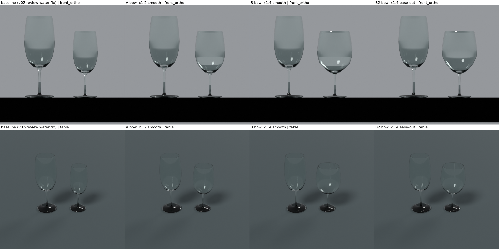

COORD09 候補比較（自作レンダーのみ）
同じカメラ・同じ光で、基準（無変更の書き出し）と比べた候補。参考画像はこのページに含めない（画像名と観測は README と CHECKPOINT を参照）。pip の bpy 4.3.0 / Cycles CPU。Blender 5.2.2 は実行していない。Unity は未確認。採否は指示役・ユーザーが判断する。
クロスの裾（T1 推奨 / T2 代替）
source FUR01 の裾の山 4 つを 2 倍の深さにした（T1）。ひだの谷を内側へ深くした（T2、効果は弱い）。木部・UV・外寸は不変

椅子の背（C1 推奨 / C2 不採用）
4 本の細い桟を幅広の板にして、間を細い溝にした（C1）。上端の V 字化（C2）は肩に折れが出たため不採用

壁灯のカップ（L1 推奨 / L2 不採用）
カップの幅 ÷ 高さを 0.87 から 1.05 にした（L1）。広がり形（L2）は継ぎ目にへこみが出たため不採用

壁灯（Straight）L1
Curved と同じカップに L1 を適用

袖壁戸棚（K2 参考寄り / K1 控えめ）
扉の範囲だけを縦に伸ばし、幅 ÷ 高さを 1.57 から 1.25（K1）/ 1.10（K2）にした

花籠 試験: 編み目の明暗 W / 垂れ D・D2
試験結果（本体 FUR04 を保持）

花籠 試験: 葉 L / L2 / L3
試験結果（本体 FUR04 を保持）

花籠 試験: W2 編み目材質（候補専用 texture）
試験結果（本体 FUR04 を保持）

花籠 LOD1 局所修正の前後
ゼロ長法線と負体積を局所修正した（原因は v02 の LOD1 由来）

水グラス ボウル A / B / B2
診断（Water 本体の置換は未採用）
